토목산업기사 (2002-03-10 기출문제)
1과목: 응용역학
1. 다음 힘의 0점에 대한 모멘트 값은?
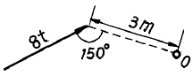
- 24 tonf·m
- 8 tonf·m
- 6 tonf·m
- 12 tonf·m
(정답률: 40%)
2. 사다리꼴 단면에서 x 축에 대한 단면 2차 모멘트값은?
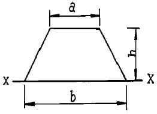
 (3b+a)
(3b+a) (b+2a)
(b+2a) (b+3a)
(b+3a)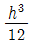
(2b+a)
(정답률: 알수없음)
3. 그림과 같이 지름 d인 원형단면에서 최대 단면계수를 갖는 구형 단면을 얻으려고 한다. 이때 폭 b와 지름 d와의 비는?
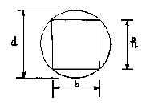
- 1 : √2
- 1 : 2
- 1 : √3
- 1 : 3
(정답률: 알수없음)
4. 길이 ℓ , 지름 D 인 원형 단면봉이 인장 하중 P를 받고 있다. 응력이 이 단면에 균일하게 분포한다고 가정할 때 이 봉에 저장되는 변형에너지(U)를 구한 값은? (단, 봉의 탄성계수는 E 이다.)
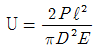
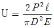
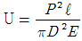
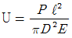
(정답률: 알수없음)
5. 지름 d = 3cm인 강봉을 P = 6280kgf의 축방향력으로 당길 때 봉의 횡방향 수축량 δ'를 구한 값은? (단, 프와송비 ν = 1/3, 탄성계수 E = 2 × 106 kgf/cm2)
- 0.0073 mm
- 0.0⑤3 mm
- 0.0044 mm
- 0.0032 mm
(정답률: 47%)
6. 다음과 같은 이동 등분포 하중이 단순보 AB 위를 지날 때 C점에서 최대 휨모멘트가 생길려면 등분포하중의 앞단에서 C점까지의 거리가 얼마일 때가 되겠는가?
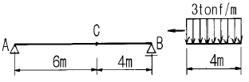
- 2.0 m
- 2.4 m
- 2.7 m
- 3.0 m
(정답률: 알수없음)
7. 길이 6m인 단순보에 그림과 같이 집중하중 7tonf, 2tonf이 작용할 때 최대 휨모멘트는 얼마인가?
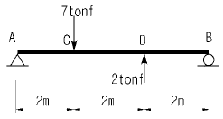
- 7 tonf·m
- 10.5 tonf·m
- 8 tonf·m
- 7.5 tonf·m
(정답률: 알수없음)
8. 다음 단면에서 정사각형 단면의 최대 전단응력은 원형 단면의 최대 전단응력의 몇 배인가? (단,두단면의 단면적과 작용하는 전단력의 크기는 같다.)
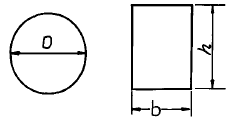
- 8/9 배
- 9/8 배
- 5/6 배
- 6/5 배
(정답률: 46%)
9. 그림과 같은 캔틸레버보의 최대 처짐은?
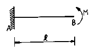
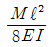
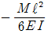
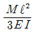
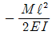
(정답률: 30%)
10. 그림과 같은 장주의 좌굴응력을 구하는 식으로 옳은 것은? (단, 기둥의 길이 : ℓ , 탄성계수 : E, 세장비 : λ )
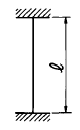
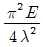
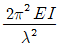
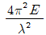
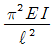
(정답률: 알수없음)
11. 축방향력 N, 단면적 A, 탄성계수 E일 때 축방향 변형 에너지를 나타내는 식은?
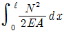
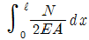
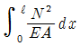
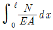
(정답률: 알수없음)
12. 그림과 같은 3활절 라멘의 수평반력 HA 값은?
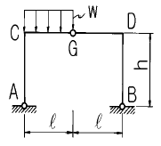
- wℓ2 / 4h
- wℓ2 / 8h
- wℓ2 / 16h
- wℓ2 / 24h
(정답률: 알수없음)
13. 정정 트러스 해법상의 가정중 틀린 것은?
- 외력은 모두 절점에만 작용한다.
- 각 부재는 직선이다.
- 절점의 중심을 이은 직선은 부재의 축과 일치한다.
- 각 부재는 회전하지 못하도록 rivet 연결한다.
(정답률: 알수없음)
14. 다음 보에서 고정 모멘트 MA의 값은?
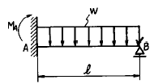
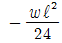
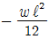
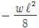
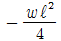
(정답률: 55%)
15. 단면적 600㎜2 , 길이 500㎜인 연강봉이 탄성한도내에서 인장하중을 받아 2000㎏f/㎝2의 응력이 생겼다면 이 봉에 저장된 탄성에너지는? (단, 탄성계수 E = 2 × 106 ㎏f/㎝2)
- 100 ㎏f·㎝
- 200 ㎏f·㎝
- 300 ㎏f·㎝
- 400 ㎏f·㎝
(정답률: 알수없음)
16. 다음 그림의 보에서 C점에 ΔC=0.2cm의 처짐이 생겼다고 할 때, 만약 D점의 P를 C점에 작용시켰을 경우 D점에 생기는 처짐 ΔD의 값은?
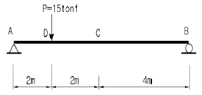
- 0.6cm
- 0.4cm
- 0.2cm
- 0.1cm
(정답률: 46%)
17. 그림과 같은 캔틸레버보에 힘이 작용할 때 생기는 전단력도의 모양은 어떤 형태인가?
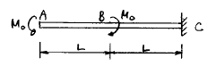
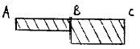
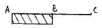
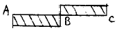
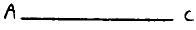
(정답률: 알수없음)
18. 지름 D, 길이 ℓ 인 원형 기둥의 세장비는?
- 4ℓ / D
- 8ℓ / D
- 4D / ℓ
- 8D / ℓ
(정답률: 알수없음)
19. 그림의 구조물에서 유효강성 계수를 고려한 부재 AC의 모멘트 분배율 DFAC는 얼마인가 ?
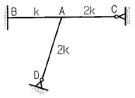
- 0.253
- 0.375
- 0.407
- 0.567
(정답률: 알수없음)
20. 그림과 같은 역계에서 합력R의 위치 x의 값은?
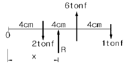
- 6 cm
- 8 cm
- 10 cm
- 12 cm
(정답률: 39%)
2과목: 측량학
21. 다음 도로의 횡단면도에서 AB의 수평거리는?
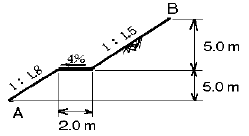
- 8.1m
- 17.5m
- 18.5m
- 19.5m
(정답률: 알수없음)
22. 설계속도 V=60 km/hr 이고 상향구배 5%, 하향구배 –15%일 때 종곡선 길이는?
- 50 m
- 100 m
- 150 m
- 200 m
(정답률: 40%)
23. 4km 전방에 측점을 설치하고자 한다. 거리측정의 오차를 10cm 이내로 하려면 각측량의 오차를 얼마 이내로 해야하는가?
- 5″
- 8″
- 12″
- 15″
(정답률: 40%)
24. 다음과 같은 삼각형 토지를 △ABP : △APC = 20m2 : 70m2 로 분할하고자 할 때 BP의 길이는? (단, BC의 길이는 50m임)
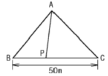
- 14.29m
- 11.11m
- 12.11m
- 15.29m
(정답률: 알수없음)
25. 촬영고도 3000m인 비행기에서 화면거리 151mm인 카메라로 촬영한 수직항공사진에서 길이가 50m인 교량의 사진상에 나타나는 길이는?
- 1.0 mm
- 1.5 mm
- 2.0 mm
- 2.5 mm
(정답률: 알수없음)
26. 축척 1/5000 에 대한 단위면적이 5m2 이다. 이것을 이용하여 1/10000 축척의 면적을 구할 때 단위면적은?
- 20 m2
- 10 m2
- 50 m2
- 1.3 m2
(정답률: 알수없음)
27. 도로설계에 있어서 설계속도가 2배가 되면 Cant의 크기는 몇 배로 하여야 하는가?
- 1배
- 2배
- 3배
- 4배
(정답률: 50%)
28. 항공사진은 다음 어떤 원리에 의한 지형지물의 상인가?
- 정사투영
- 평행투영
- 등적투영
- 중심투영
(정답률: 46%)
29. A,B,C,D 네 사람이 거리 10km, 8km, 6km, 4km의 구간을 왕복 수준측량하여 폐합차를 각각 20㎜,18㎜,15㎜,13㎜ 얻었을 때 가장 정확한 결과를 얻은 사람은?
- A
- B
- C
- D
(정답률: 34%)
30. 1 : 25,000 지역의 지형도 1매를 1 : 5,000로 재편집하고자 할 때 몇 매의 지형도가 나오는가?
- 5 매
- 10 매
- 15 매
- 25 매
(정답률: 70%)
31. 삼변측량에서 cos A를 구하는 식으로 옳은 것은?
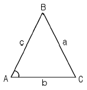
- a2+c2-b2 / 2ac
- b2+c2-a2 / 2bc
- a2+b2-c2 / 2bc
- a2-c2+b2 / 2ac
(정답률: 20%)
32. 유량측정의 방법 중 유역면적을 측량하고 유역내 강우량을 기본으로 이 지역의 지질, 지형, 온도 등의 사항을 고려하여 하천의 유출량을 추정하는 방법은?
- 유속계 사용법
- 부자 사용법
- 간접유량 측정법
- 사면구배 측정법
(정답률: 10%)
33. 결합트래버스측량에서 그림과 같은 형태의 각관측시 각관측시 오차식은?
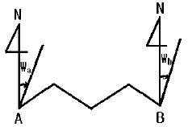
- Ea=Wa-Wb+[a]-180(n+3)
- Ea=Wa-Wb+[a]-180(n-3)
- Ea=Wa-Wb+[a]-180(n+1)
- Ea=Wa-Wb+[a]-180(n-1)
(정답률: 알수없음)
34. 경사도 12% 인 경사면을 따라 두 점간의 거리를 측정한 결과 400m 이었다고 한다. 수평거리는 얼마인가?
- 402.88m
- 398.26m
- 397.12m
- 400.35m
(정답률: 20%)
35. 다음은 다각측량의 특징을 서술한 것이다. 이에 해당되지 않는 것은?
- 복잡한 시가지나 지형의 기복이 심해 시준이 어려운 지역의 측량에 적합하다.
- 도로, 수로, 철도와 같이 폭이 좁고 긴 지역의 측량에 편리하다.
- 국가평면기준점 결정에 이용되는 측량방법이다.
- 거리와 각을 관측하여 도식해법에 의하여 모든 점의 위치를 결정할 때 편리하다.
(정답률: 30%)
36. A, B 두점간의 거리를 갑, 을, 병 세사람이 다음과 같이 관측하였을 때 거리 AB의 최확값은?
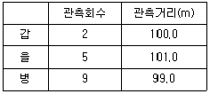
- 99.75m
- 100.00m
- 100.25m
- 100.50m
(정답률: 46%)
37. 다음 중 삼각측량 성과표에 기록되는 내용이 아닌 것은?
- 삼각점의 등급
- 방위각
- 평면직교좌표
- 중력값
(정답률: 55%)
38. 축척 1/500 의 평판측량에서 제도의 허용오차를 0.3mm로 할 때 평판의 구심오차의 허용한계는?
- 7.5cm
- 8.2cm
- 8.9cm
- 9.3cm
(정답률: 알수없음)
39. 초점거리 150mm, 비행고도 4500m 인 항공사진에서 사진측정의 평면오차 한계는?
- 0.3∼0.9 m
- 0.5∼1.0 m
- 0.7∼2.1 m
- 0.8∼2.4 m
(정답률: 50%)
40. 매개변수 A=100m인 클로소이드 곡선상의 시점 KA에서 곡선길이 50m에 대한 반지름은?
- 20 m
- 150 m
- 200 m
- 500 m
(정답률: 알수없음)
3과목: 수리학
41. 비에너지에 대한 설명으로 틀린 것은?
- 수로바닥을 기준으로 한다.
- 상류일 때는 수심이 작아짐에 따라 비에너지는 커진다.
- 수류가 등류이면 비에너지는 일정한 값을 갖는다.
- 단위무게의 물이 가진 흐름의 에너지를 말한다.
(정답률: 알수없음)
42. 다음 중 유출에 영향이 있는 인자로 볼 수 없는 것은?
- 유역의 면적
- 유역의 경사
- 유역의 형상
- 유역의 위치
(정답률: 알수없음)
43. 다음은 베르누이 정리를 압력의 항으로 표시한 것이다. 이 중 동압력(動壓力) 항에 해당하는 것은?
- P
- ρ g z
- 1/2(ρV2)
- V2 / 2g
(정답률: 알수없음)
44. 1kg/cm2 의 수압강도를 압력수두로 환산한 값은?
- 0.1m
- 1.0m
- 10.0m
- 100.0m
(정답률: 알수없음)
45. 각종 수문학적 해석 및 설계를 하는데 있어서 총강우량 이외에 필요한 사항이 아닌 것은?
- 강우강도
- 강우의 지속기간
- 강우의 생성원인
- 강우의 생기빈도
(정답률: 40%)
46. 질량 2kg인 물체를 스프링 저울로 달아보니 19.60 Newton 이었다. 이 지점의 중력가속도는?
- 9.8 × 102m/sec2
- 8.9m/sec2
- 0.98m/sec2
- 9.8m/sec2
(정답률: 알수없음)
47. 다음 그림과 같은 오리피스에서 유출하는 유량은? (단, 이론 유량을 계산한다)
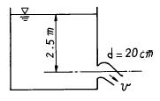
- 0.12 m3/sec
- 0.22 m3/sec
- 0.32 m3/sec
- 0.42 m3/sec
(정답률: 40%)
48. 수심 4m인 곳에 두 개의 직경이 같은 원형 오리피스를 만들어 10ℓ /sec의 물을 흐르게 할 때 적당한 직경은? (단, C = 0.62임)
- 1.70㎝
- 2.96㎝
- 3.41㎝
- 4.82㎝
(정답률: 알수없음)
49. 다음의 수문순환과정 중 손실우량에 해당되는 성분은?
- 지표면 저류수
- 지표면 유출수
- 지표하 유출수
- 수로상 강수
(정답률: 알수없음)
50. Manning의 조도계수에 대한 설명으로 틀린 것은?
- 세굴은 조도계수를 감소시키고 퇴적은 증가시킨다.
- 같은 수로라 하더라도 일반적으로 고수위 및 고수량에서는 조도계수가 작아진다.
- 계절에 따라 조도계수 값이 달라질 수 있다.
- 부유물질이 많으면 조도계수가 증가한다.
(정답률: 알수없음)
51. 동일한 단면과 수로 경사에 대하여 최대 유량이 흐르는 조건으로 옳은 것은?
- 윤변이 최대이거나 경심이 최소일 때
- 수심이 최대이거나 수로폭이 최소일 때
- 수심이 최소이거나 경심이 최대일 때
- 윤변이 최소이거나 경심이 최대일 때
(정답률: 알수없음)
52. 여과량이 1.0m3/sec이고 동수경사가 0.5, 투수계수가 0.5cm/sec 일 때 필요한 여과지 면적은?
- 400 m2
- 300 m2
- 200 m2
- 100 m2
(정답률: 알수없음)
53. 지하수 흐름의 기본방정식으로 이용되는 법칙은?
- Chezy의 법칙
- Darcy의 법칙
- Manning의 법칙
- Reynolds의 법칙
(정답률: 알수없음)
54. 힘의 차원을 MLT계로 표시하면?
- [ML-1T-2]
- [MLT-1]
- [ML-2T2]
- [MLT-2]
(정답률: 42%)
55. X 우량관측점에서 일정기간 동안 우량관측이 중단되었다. 인접한 A, B, C관측점에서의 결측기간 동안의 강우량과 정상년 평균강우량이 다음과 같을 때 X관측점에서의 강우량 결측치를 계산하면?
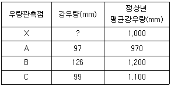
- 98.3mm
- 102.3mm
- 107.3mm
- 110.3mm
(정답률: 알수없음)
56. 여수로의 배출구 단면적 a는 0.5m2이고 저수지 수면과 위어까지의 높이가 다음 그림과 같을 때 유량은? (단, 유량계수(C)는 1.8임)
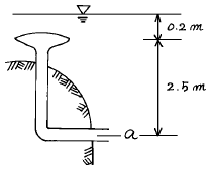
- 0.64m3/sec
- 0.92m3/sec
- 1.27m3/sec
- 1.48m3/sec
(정답률: 알수없음)
57. 다음 중 부체의 안정을 조사할 때 고려되지 않는 것은?
- 경심
- 수심
- 부심
- 물체중심
(정답률: 30%)
58. 다음 그림과 같이 원관으로 된 관로에서 D2 = 200mm, Q2 = 150ℓ /sec 이고 D3 = 150mm, V3 = 2.2m/sec 인 경우 D1 = 300mm에서의 유량 Q1 은?
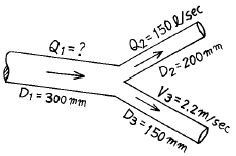
- 188.9 ℓ /sec
- 180.0 ℓ /sec
- 170.4 ℓ /sec
- 190.2 ℓ /sec
(정답률: 알수없음)
59. 밀도의 차원을 공학단위 [FLT]로 옳게 표시한 것은?
- [FL-4T2]
- [ML-4T2]
- [FL-3]
- [FL4T-2]
(정답률: 28%)
60. 정수압의 성질을 설명한 것으로 틀린 것은?
- 정수중에 작용하는 힘은 마찰력과 압력이다.
- 정수압의 크기는 단위면적에 작용하는 힘의 크기로 표시한다.
- 정수중의 임의의 한점에 작용하는 정수압의 강도는 방향에 관계없이 동일하게 작용한다.
- 정수압은 작용면에 대하여 물체 표면에 수직으로만 작용한다.
(정답률: 알수없음)
4과목: 철근콘크리트 및 강구조
61. PS강재의 인장응력 fp = 10,000 kgf/cm2, 콘크리트의 응력 fc = 50 kgf/cm2, 크리프 계수 2.0인 PSC부재의 탄성계수비가 5일 때 PS강재의 크리프에 의한 감소율은 얼마인가?
- 3 %
- 4 %
- 5 %
- 6 %
(정답률: 알수없음)
62. D13철근을 U형 스터럽으로 가공하여 30㎝ 간격으로 부재축에 직각이 되게 설치한 전단 철근의 강도 Vs 는? (단, fy=4,000㎏f/㎝2, d=60㎝, D13철근의 단면적은 1.27㎝2로 계산하며 강도설계임)
- 10,160㎏f
- 20,320㎏f
- 40,640㎏f
- 81,280㎏f
(정답률: 50%)
63. 리벳이음에서 리벳 지름 d = 19㎜, 철판 두께 t = 12mm, 허용 전단응력 Va= 800kgf/㎝2, 허용 지압응력 fba=1600kgf/㎝2일 때 이 리벳의 강도는?
- 2268 kgf
- 2840 kgf
- 3086 kgf
- 3648 kgf
(정답률: 알수없음)
64. 전단철근이 부담하는 전단강도Vs 가 2.12 √fck bW d를 초과하는 경우의 조치로 가장 합리적인 것은?
- 전단철근의 간격을 1/2로 줄인다.
- 스트럽과 굽힘철근을 병용한다.
- 콘크리트 단면을 증가시킨다.
- 최소한의 전단철근을 배근한다.
(정답률: 40%)
65. 그림과 같은 단면을 가진보를 강도설계 이론에 의해서 해석할 경우 등가 직사각응력블록의 깊이 a는? (단, fck=210kgf/cm2, fy=2,500kgf/cm2)
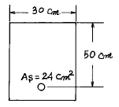
- 11.2cm
- 13.2cm
- 19.4cm
- 21.4cm
(정답률: 40%)
66. 강도해석에서 fck=300kgf/cm2일 때 응력도의 높이 비 β1은 얼마인가?
- β1 = 0.85
- β1 = 0.843
- β1 = 0.836
- β1 = 0.829
(정답률: 42%)
67. 다음 그림은 필렛(Fillet) 용접한 것이다. 목두께 a를 표시한 것중 옳은 것은?
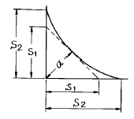
- a = S2 × 0.707
- a = S1 × 0.707
- a = S2 × 0.606
- a = S1 × 0.606
(정답률: 37%)
68. 설계기준강도가 fck=250kgf/cm2 일 때 현행 콘크리트구조 설계기준(1999)에 의거 평균 소요배합강도 fcr은 얼마인가? (단, 표준편차는 0.15fck를 사용한다.)
- fcr = 287.5kgf/cm2
- fcr= 311.5kgf/cm2
- fcr = 325kgf/cm2
- fcr = 250kgf/cm2
(정답률: 알수없음)
69. 과소철근 콘크리트보에서 철근이 항복한 후에 계속해서 외부모멘트가 증가할 경우, 중립축의 위치는 어떻게 되는가?
- 압축연단 쪽으로 이동한다.
- 인장연단 쪽으로 이동한다.
- 변화하지 않는다.
- 단면의 도심 쪽으로 이동한다.
(정답률: 알수없음)
70. 그림에 나타난 직사각형 단철근 보가 공칭 휨강도 Mn에 도달할 때 압축측 콘크리트가 부담하는 압축력을 계산하면? (단, 철근 D22 4본의 단면적은 15.48cm2, fck = 280 kgf/cm2, fy = 3500 kgf/cm2이다.)
- 54.2 tonf
- 63.7 tonf
- 72.4 tonf
- 83.3 tonf
(정답률: 알수없음)
71. 1 방향 슬래브의 정철근 및 부철근의 중심 간격은 최대 휨 모멘트가 일어나는 단면에서 슬래브 두께의 몇 배 이하 또 몇 cm 이하로 하는가?
- 2배 이하, 30cm 이하
- 2배 이하, 40cm 이하
- 3배 이하, 30cm 이하
- 3배 이하, 40cm 이하
(정답률: 알수없음)
72. 인장을 받는 이형철근의 기본정착길이 ℓdb를 계산하기 위해 필요한 요소가 아닌 것은?
- 철근의 공칭지름
- 철근의 설계기준항복강도
- 전단철근의 간격
- 콘크리트의 설계기준강도
(정답률: 58%)
73. 강도설계에서 fck = 240㎏f/㎝2, fy = 2,800㎏f/㎝2를 사용하는 단철근보에 사용할 수 있는 최대인장철근비는?
- 0.032
- 0.036
- 0.040
- 0.044
(정답률: 알수없음)
74. 압축부재의 축방향철근의 최소 갯수에 관한 규정을 열거한 다음 내용중 틀린 것은?
- 띠철근 3각형 단면일 때 3개이다.
- 나선철근 원형 단면일 때 6개 이다.
- 띠철근 4각형 단면일 때 4개 이다.
- 띠철근 원형 단면일 때 5개 이다.
(정답률: 30%)
75. 프리스트레스트 콘크리트에서 강재의 프리스트레스 도입 시 손실에 해당되지 않는 것은?
- 정착장치의 활동에 의한 손실
- PS 강재와 긴장 덕트의 마찰에 의한 손실
- PS 강재의 릴랙세이션 손실
- 콘크리트의 탄성 수축에 의한 손실
(정답률: 알수없음)
76. PS콘크리트 구조물 설계시 균열발생전에 단면에 일어나는 응력해석의 방법으로 옳지 않은 것은?
- 단면의 변형은 중립축으로 부터 거리에 비례한다.
- 콘크리트와 PS 강재 및 보강철근은 탄성체로 본다.
- 콘크리트의 인장측 인장응력은 무시한다.
- 긴장재를 부착시키기 전의 단면 계산에서는 덕트의 단면적을 공제한다.
(정답률: 17%)
77. 그림과 같은 단순보에서 자중을 포함하여 계수하중이 2tonf/m 작용하고 있다. 이 보의 위험단면에서 전단력은 얼마인가?
- 10tonf
- 9tonf
- 8tonf
- 7tonf
(정답률: 34%)
78. 다음과 그림과 같은 전단력 P = 30 tonf가 작용하는 부재를 용접이음하고자 할 때 생기는 전단응력은?
- 960 kgf/cm2
- 781.3 kgf/cm2
- 1090.4 kgf/cm2
- 842.5 kgf/cm2
(정답률: 알수없음)
79. 강도설계법으로 전단과 비틀림을 받는 콘크리트 부재를 설계할 때 사용되는 강도감소계수 φ는 얼마인가?(오류 신고가 접수된 문제입니다. 반드시 정답과 해설을 확인하시기 바랍니다.)
- 0.70
- 0.85
- 0.80
- 0.75
(정답률: 알수없음)
80. 독립 확대 기초의 크기가 2 × 3 m이고 지반의 허용 지지력이 20 tonf/m2일 때 이 기초가 받을 수 있는 허용 하중의 크기는?
- 60 tonf
- 80 tonf
- 120 tonf
- 150 tonf
(정답률: 알수없음)
5과목: 토질 및 기초
81. 단위 체적중량이 1.6t/m3, 점착력 c=1.5t/m2, 마찰각 φ=0인 점토지반에 폭 B=2m, 근입깊이 Df=3m의 연속 기초의 극한 지지력은? (단, Terzaghi 식을 이용, 지지력계수 Nc=5.7, Nr=0, Nq=1.0, 형상계수 α =1.0, β =0.5)
- 10.15 t/m2
- 13.35 t/m2
- 15.42 t/m2
- 18.12 t/m2
(정답률: 알수없음)
82. 어떤흙의 공시체에 대한 일축압축 시험을 하였더니, 일축압축 강도 qu=3.0 ㎏/㎝2, 파괴면의 각도 θ = 50° 였다. 이 흙의 점착력과 내부 마찰각은 얼마인가?(오류 신고가 접수된 문제입니다. 반드시 정답과 해설을 확인하시기 바랍니다.)
- C = 1.5 ㎏/㎝2, φ = 10°
- C = 1.5 ㎏/㎝2, φ = 5°
- C = 1.259 ㎏/㎝2, φ = 5°
- C = 1.259 ㎏/㎝2, φ = 10°
(정답률: 알수없음)
83. 안지름이 0.6㎜인 유리관 속을 증류수가 상승할 때 그 높이는? (단, 접촉각 α 는 0o 이고 수온은 15℃, 표면장력은 0.075g/cm이다.)
- 6 ㎝
- 5 ㎝
- 4 ㎝
- 3 ㎝
(정답률: 알수없음)
84. 그림과 같은 지반에서 깊이 5m 지점에서의 전단 강도는? (단, 내부마찰각은 35° , 점착력은 0 이다.)
- 3.2t/m2
- 3.8t/m2
- 4.5t/m2
- 6.3t/m2
(정답률: 알수없음)
85. 그림은 흙댐의 침윤선을 구하는 방법을 그린 그림이다. 다음 설명 중 옳지 않은 것은?
- 기본 포물선의 초점은 Ｅ이다.
- 로 되는 위치에 준선이 있게 된다.
- D점은EF의 중점이 된다.
- GC와 기본포물선은 직교한다.
(정답률: 알수없음)
86. 습윤토 1000㎝3의 교란되지 않은 시료가 있다. 이 시료의 시험결과 무게는 1550g, 함수비는 12.5%,비중은 2.60의 값을 얻었다. 교란되지 않은 상태의 포화도는 얼마인가?
- 32%
- 37%
- 44%
- 56%
(정답률: 알수없음)
87. 어떤 점토층에 재하순간 과잉 공극수압이 2t/m2이었던 것이 7일 경과후 1.2t/m2로 감소되었다면 이 지층의 압밀도는 얼마인가?
- 60%
- 40%
- 30%
- 10%
(정답률: 알수없음)
88. 다음과 같은 토질시험 중에서 현장에서 이루어지지 않는 시험은?
- 베인(Vane)전단시험
- 표준관입시험
- 수축한계시험
- 원추관입시험
(정답률: 알수없음)
89. 기초지반의 지지력이 작은 곳에서 하나의 큰 슬래브로 연결하여 지반에 작용하는 단위압력을 감소시키는 형식의 기초는 어느 것인가?
- 연속기초
- 독립기초
- 복합기초
- 전면기초
(정답률: 50%)
90. 점성토의 단위중량(γ)이 1.8t/m3이고, 점착력(c)이 0.8t/m2 일때 평면활동면으로 본 Coulomb의 한계고(Hc)를 구한 값은?
- 1.78m
- 1.85m
- 1.97m
- 2.01m
(정답률: 알수없음)
91. 말뚝의 지지력을 결정하기 위해 엔지니어링 뉴스(Engineering-News)공식을 사용할 때 안전율을 얼마 정도 적용하는가?
- 1
- 2
- 3
- 6
(정답률: 39%)
92. 연약지반 개량공법중 프리로딩(preloding) 공법은 다음 중 어떤 경우에 채용하는가?
- 압밀계수가 작고 점성토층의 두께가 큰 경우
- 압밀계수가 크고 점성토층의 두께가 얇은 경우
- 구조물 공사기간에 여유가 없는 경우
- 2차 압밀비가 큰 흙의 경우
(정답률: 알수없음)
93. 모래치환법에 의한 흙의 현장단위 체적중량 시험에서 모래를 사용하는 목적은 무엇을 알기 위해서인가?
- 시험구멍에서 파낸 흙의 중량
- 시험구멍의 체적
- 시험구멍에서 파낸 흙의 함수상태
- 시험구멍의 밑면의 지지력
(정답률: 47%)
94. 표준 관입시험에서 얻은 N치란 보링 롯드 끝에 스프릿스푼(split spoon) 채취기를 붙여서 표준 램머를 낙하고 76㎝ 에서 때렸을 때 몇 ㎝ 관입될 때의 타격회수를 측정하는 시험인가?
- 20㎝
- 25㎝
- 30㎝
- 35㎝
(정답률: 알수없음)
95. 포화단위 중량이 2.1g/㎝3인 사질토 지반에서 분사현상(quick sand)에 대한 한계 동수경사는?
- 0.9
- 1.1
- 1.6
- 2.1
(정답률: 30%)
96. 주동토압 계수를 KA,수동토압계수를 Kp, 정지토압계수를 Ko라 할 때 그 크기의 순서가 맞는 것은?
- KA ＞ Ko ＞ Kp
- Kp ＞ Ko ＞ KA
- Ko ＞ KA ＞ Kp
- Ko ＞ Kp ＞ KA
(정답률: 알수없음)
97. 다짐 에너지(Ec)에 관한 다음 사항중 옳지 않은 것은?
- Ec 는 낙하고에 비례한다.
- Ec 는 램머의 중량에 비례한다.
- Ec 는 다짐시료 용적에 비례한다.
- Ec 는 다짐 층수에 비례한다.
(정답률: 알수없음)
98. 흙의 입도분석 결과 입경가적 곡선이 입경의 좁은 범위내에 대부분이 몰려있는 입경분포가 나쁜 빈입도(poor grading)일때 다음중 옳지 않은 것은?
- 균등계수는 작을 것이다.
- 공극비가 클것이다.
- 다짐에 적합한 흙이 아닐것이다.
- 투수계수가 낮을 것이다.
(정답률: 37%)
99. 다음 그림의 파괴 포락선중에서 완전포화된 점성토를 UU(비압밀비배수)시험을 했을때 생기는 파괴포락선은 어느 것인가?
- ①
- ②
- ③
- ④
(정답률: 알수없음)
100. 채취된 시료의 교란정도는 면적비를 계산하여 통상 면적비가 몇 % 이하이면 잉여토의 혼입이 불가능한 것으로 보고 불교란 시료로 간주하는가?
- 5%
- 7%
- 10%
- 15%
(정답률: 알수없음)
6과목: 상하수도공학
101. 하수관거의 배제방식에 대한 설명 중 틀린 것은?
- 분류식은 합류식에 비하여 관거의 부설비용이 많이 든다.
- 합류식은 강우초기의 오염된 우수의 처리가 가능하다.
- 합류식일 경우 강우시가 아닌 평상시에는 관내에 고형물이 퇴적하기 쉽다.
- 위생상 관점에서 보면 합류식이 바람직하나 경제적인 관점에서 보면 분류식이 유리하다.
(정답률: 알수없음)
102. 계획시간 최대급수량은 계획1일 최대급수량의 1시간 양에 대도시와 공업도시에서는 몇 %를 증가시키는가?
- 20
- 30
- 40
- 50
(정답률: 40%)
103. 하수도의 일반적인 원형관에서의 수리특성곡선에 대한 설명중 옳은 것은?
- 만관시 유량이 최대이다.
- 만관시 유속이 최대이다.
- 관이 반만 차서 흐를 때 유속은 만관시의 절반이다.
- 수심의 80%만 차서 흐를 때 유속이 최대이다.
(정답률: 알수없음)
104. 우수관의 길이 1,500m인 하수관 내에서 우수가 1.2m/sec의 속도로 흐르고 있다. 유달시간은? (단, 유입시간은 7분임)
- 7분
- 14분
- 21분
- 28분
(정답률: 알수없음)
1⑤. 다음은 관거의 접합방법에 관한 설명이다. 틀린 것은?
- 수면접합 : 수리학적으로 대개 계획수위를 일치시켜 접합시키는 것으로서 양호한 방법이다.
- 관정접합 : 유수는 원활한 흐름이 되지만 굴착깊이가 증가되어 공사비가 증대된다.
- 관중심접합 : 수면접합과 관저접합의 중간적인 방법이나 보통 수면접합에 준용된다.
- 관저접합 : 수위상승을 방지하고 양정고를 줄일 수 있으나 굴착깊이가 증가되어 공사비가 증대된다.
(정답률: 55%)
106. 현재 인구가 50,000명이고 연평균 인구 증가율이 0.⑤ 일때 20년 후의 추정인구를 연평균 인구증가율에 의한 방법으로 구하면?
- 약 100,000명
- 약 130,000명
- 약 150,000명
- 약 200,000명
(정답률: 알수없음)
107. 수압시험으로 누수량을 측정하여 상수관 부설의 이상유무를 판단하는데 사용하는 누수량 산출공식은 아래와 같다. 공식의 단위로 틀린 것은?
- L : 허용누수량(l/hr)
- N : 관 이음수
- D : 관 내경(cm)
- P : 시험수압강도(kg/cm2)
(정답률: 알수없음)
108. 우천시 배수구역으로부터 방류되는 초기우수의 오염부하량을 감소시키고 우수를 일시저류하여 유량조절을 할 수 있는 시설은?
- 침사지
- 우수토실
- 우수펌프장
- 우수조정지
(정답률: 알수없음)
109. 하천의 자정작용 중에서 가장 큰 작용을 하는 것은?
- 생물학적 작용
- 화학적 작용
- 침전
- 일광
(정답률: 알수없음)
110. 수원의 위치와 취수지점을 선정하는데 있어 고려해야 할 사항이 아닌 것은?
- 수질 및 수량
- 처리장 및 급수지역과의 거리
- 장래 확장의 가능성
- 부지의 모양
(정답률: 40%)
111. 처리수량이 6000 m3/day인 정수장에서 염소를 6 ㎎/ℓ 의 농도로 주입할 때 잔류염소농도가 0.2 ㎎/ℓ 이었다. 염소요구량은? (단, 염소의 순도는 75% 임)
- 52.6 ㎏/day
- 46.4 ㎏/day
- 38.8 ㎏/day
- 26.1 ㎏/day
(정답률: 알수없음)
112. 송수관이란 다음 중 어느 것을 지칭하는가?
- 취수장과 정수장 사이의 관
- 정수장과 배수지 사이의 관
- 배수지에서 주도로까지의 관
- 배수지에서 수도계량기까지의 관
(정답률: 알수없음)
113. 펌프를 선택할 때 고려해야 할 사항으로 적당하지 않은 것은?
- 펌프의 특성
- 양정
- 동력
- 펌프의 무게
(정답률: 30%)
114. 하수관거가 관정부식(crown corrosion) 되는 주요 원인 물질은 다음 중 무엇인가?
- 황화합물
- 질소화합물
- 칼슘화합물
- 염소화합물
(정답률: 50%)
115. 합리식에서 사용하는 강우강도 공식에 관한 설명이다. 틀린 것은?
- Talbot형 공식, Sherman형 공식 등이 이에 속한다.
- 공식중의 정수(상수)는 지표형태에 따라 결정된다.
- 강우지속기간의 증가에 따라 강우강도는 감소한다.
- 임의의 지속기간에 대한 강우강도를 구하는데 사용된다.
(정답률: 알수없음)
116. Jar-test의 시험목적은?
- 응집제 주입량 및 최적 pH 결정
- 염소 주입량 결정
- 염소 접촉시간 결정
- 총 수처리시간의 결정
(정답률: 39%)
117. 다음은 오니(sludge)의 농축방법에 관한 것이다. 틀린 것은?
- 중력식 농축조는 조내에 오니를 체류시켜 자연 중력을 이용하여 농축하는 방법이다.
- 부상식 농축조의 고형물 부하는 80~150[kg/m2·d]정도이다.
- 중력식 농축조는 고형물 부하는 100~200[kg/m2·d]정도이다.
- 중력식 농축조의 용량은 계획슬러지량의 18시간 분량 이하로 한다.
(정답률: 알수없음)
118. 하수처리장의 설계기준이 되는 기본적 하수량은 일반적으로 무엇을 기준으로 하는가?
- 계획 1일 평균 오수량
- 계획 1일 최대 오수량
- 계획 1시간 최소 오수량
- 계획 1시간 최대 오수량
(정답률: 알수없음)
119. 유량이 3000 m3/day인 처리수에 7.0 mg/ℓ 의 비율로 염소를 주입시켰더니 잔류염소량이 0.2 mg/ℓ 이었다. 이 처리수의 염소요구량은?
- 19.4 kg/day
- 20.4 kg/day
- 21.4 kg/day
- 22.4 kg/day
(정답률: 10%)
120. 수격작용이 일어나기 쉬운 곳에 설치하여 배수관의 파열을 방지하는 목적으로 사용하는 밸브는?
- 안전밸브
- 공기밸브
- 제수밸브
- 압력조정밸브
(정답률: 50%)